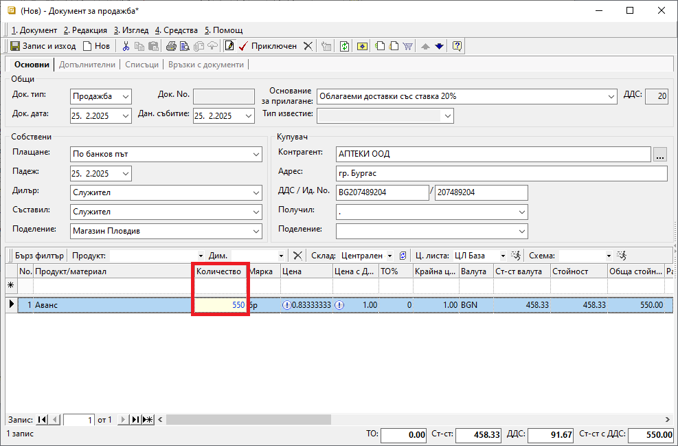
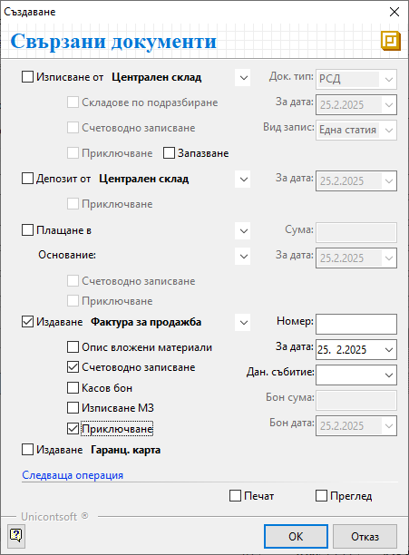
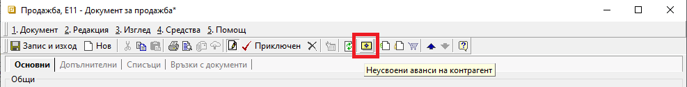
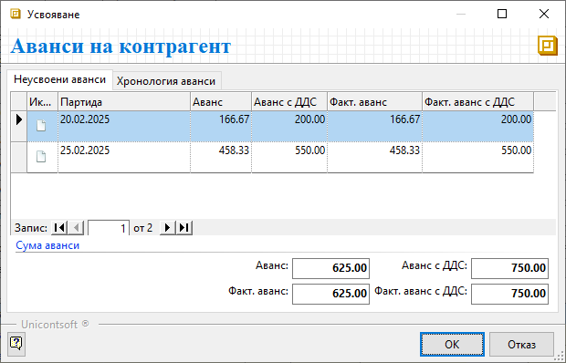
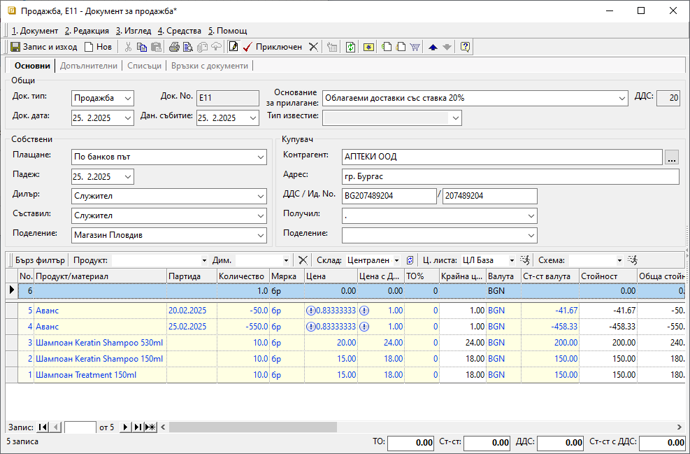
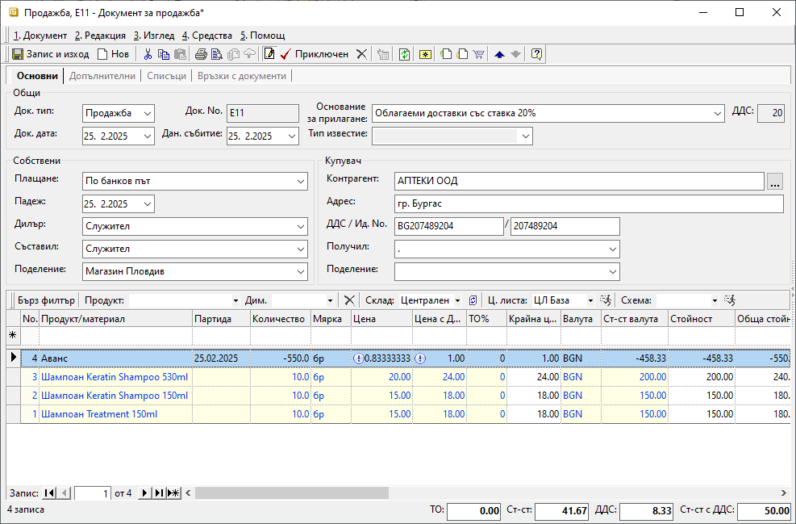

2.2.1.8. Работа с аванси#
Програмата разполага със схема за работа с аванси, която включва регистрирането и автоматичното им усвояване по партиди. Хронология на авансите - платени, усвоени и неусвоени, може да бъде проследявана по клиенти и доставчици от Други справки || Аванси по контрагенти.
Платен аванс от клиент/към доставчик се регистрира в системата чрез тип документ Продажба/Покупка. Следват се стъпките за създаване на стандартните документи. Единствената особеност е използването на продукт Аванс.
Продукт Аванс е системно въведен и настроен и не се редактира/изтрива.
Той е със заложена цена от 1.00 лв. (с ДДС), затова сумата на аванса с ДДС се въвежда и променя чрез Количество.
Схемата за работа с аванси, получени от клиенти и платени към доставчици, е идентична.
Процесът по регистриране на аванс от клиент е следният:
От Търговска система || Документи за продажба чрез десен бутон на мишката върху списъка с документи се избира Нов документ. Отваря се празна форма за въвеждане на данни.
В раздел Основни се въвеждат:
Док. Тип – в полето се отваря падащ списък за избор на тип документ;
В полето се попълва Продажба - системата предлага този тип по подразбиране;Док. No - полето се попълва с номер на документа;
Ако полето бъде оставено празно, при приключване на продажбата системата ще го обзаведе с пореден номер за избраното поделение.Док. дата - в полето се избира дата, на която е получен авансът;
Плащане - - поле за избор на типа плащане, по който е получен авансът от клиент;
Системата обзавежда полето, когато за клиента има настроено плащане по подразбиране от Номенклатури || Контрагенти.Контрагент — в полето се избира клиент, като се отваря форма за избор Контрагенти;
Ако търсеният контрагент не фигурира в съществуващия списък, системата позволява въвеждането му в момента чрез десен бутон и Нов контрагент.
Останалите полета в секция Купувач се обзавеждат с настроените за избрания клиент реквизити.

Продукт/материал - в полето задължително се избира продукт Аванс;
Той е системно настроен с цена 1.00 лв с ДДСКоличество - в полето се попълва сумата на получения аванс (с ДДС);
Мярка - полето се обзавежда според настройките на продукт Аванс;
По подразбиране мерната единица е бр (брой) и не се променя.Цена и Цена с ДДС — тези полета съдържат системно настроената цена без/с ДДС за продукт Аванс;
Цените не трябва да се коригират.Партида - чрез това поле за аванса може да се попълни партида;
Системата може да следи всеки аванс отделно, когато те са регистрирани като отделни партиди. В противен случай ги обединява и следи общо получената сума.
Приключен- бутон в лентата с инструменти, който валидира продажбата и извежда форма Свързани документи;
От тук могат да се извършат останалите операции:
Плащане в (каса) — чрез тази опцията се избира каса и се създава приходен касов ордер; Използва се, когато авансът е получен в брой.
Сума - в полето се записва фактически получената сума на аванса;
Основание - от падащия списък се избира основанието за плащане, което системата да обзаведе в касовия документ;
За дата - въвежда се дата, с която системата попълва Док. дата в касовия документ;
Счетоводно записване - при поставянето на отметка системата автоматично ще осчетоводи касовия документ;
За да се обзаведе коректно счетоводната статия, Автоматичен счетоводител трябва да е предварително настроен.Приключване - при поставена отметка системата генерира касов документ и автоматично го приключва;
Ако не бъде поставена отметка, системата генерира свързания документ, който остава в състояние на редакция.
Издаване (данъчен документ) — опцията се маркира при издаване на данъчен документ за получен аванс от клиент;
От падащия списък се избира тип на данъчния документ.Номер - полето остава празно и системата дава пореден номер на данъчния документ според избраното поделение;
За дата - с тази дата системата попълва Док. дата в данъчния документ;
Счетоводно записване - при поставянето на отметка системата ще осчетоводи данъчния документ;
Касов бон - опция за генерация на счетоводен запис за касовия бон при плащане в брой;
Ако за опцията Плащане в (каса) вече е маркирано Счетоводно записване, тук опцията Касов бон не трябва да се активира.
Бон сума - полето се обзавежда със сума на касовия бон;
Бон дата - дата на касовия бон;
Приключване - при поставена отметка системата създава данъчния документ и автоматично го приключва;
Ако не бъде поставена отметка, системата генерира свързания документ, но той остава в състояние на редакция.
Печат и Преглед - опциите се активират чрез поставяне на отметка и позволяват преглед на документа на екран или директното му отпечатване (след избор на шаблон);

Чрез бутон Запис и изход от лентата с инструменти документът се записва и формата се затваря.
Усвояване на аванс - осъществява се при последващите продажби на стока за контрагента.
В нов документ Продажба се попълват всички данни и се избира бутон Неусвоени аванси на контрагент от лентата с инструменти. Това отваря форма със списък аванси от контрагента.

В раздел Неусвоени аванси се визуализират всички получени аванси по партиди, които до момента не са усвоени.
Раздел Хронология аванси дава детайлна информация в списък с документи, с които са регистрирани получените аванси.
Маркира се ред от неусвоените аванси. Могат да бъдат избрани няколко аванса за усвояване в една продажба.
Изборът се потвърждава чрез бутон ОК и системата добавя ред за аванс в продажбата с отрицателен знак.

Частично усвояване - когато сумата на получения аванс е по–голяма от стойността на продажбата;
Системата автоматично приравнява сума на аванса към стойност на продажбата.
В този случай стойността на документа става 0.00.
Остатъкът от аванса по партидата на клиента ще може да се усвои при друга продажба.

Пълно усвояване - когато сумата на аванса за усвояване е по-малка от стойността на продажбата;
Разликата между стойност на продажбата и усвоения аванс формира стойността на текущия документ.
Партидата на избрания аванс се “закрива” след валидиране на продажбата с неговото усвояване.

Свързани статии:
Как да работим с aванси от клиенти
Как да работим с аванси към доставчици